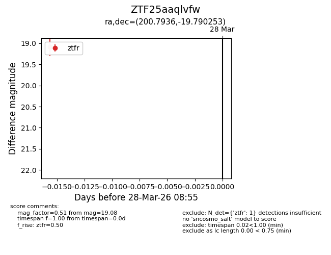
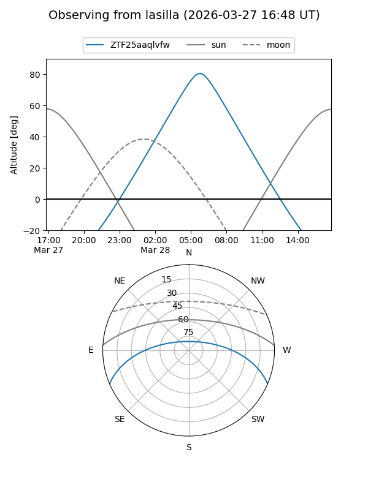
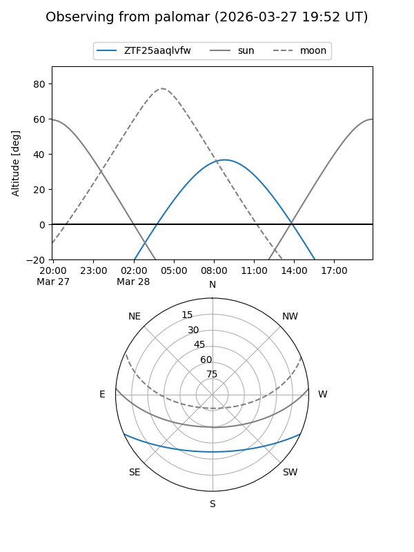

ZTF25aaqlvfw
Target ZTF25aaqlvfw at 2026-03-28 08:58
Aliases and brokers:
FINK: link
Lasair: link
ALeRCE: link
alt names
ZTF25aaqlvfw (ztf,fink_ztf)
Coordinates:
equatorial (ra, dec) = 200.7936,-19.79025
equatorial (HMS+DMS) = 13:23:10.46,-19:47:24.91
galactic (l, b) = (313.0711,+42.45583)
Flags:
Photometry:
last ztfr=19.08
1 ztfr detections
Lightcurve

Visibility


Additional plots